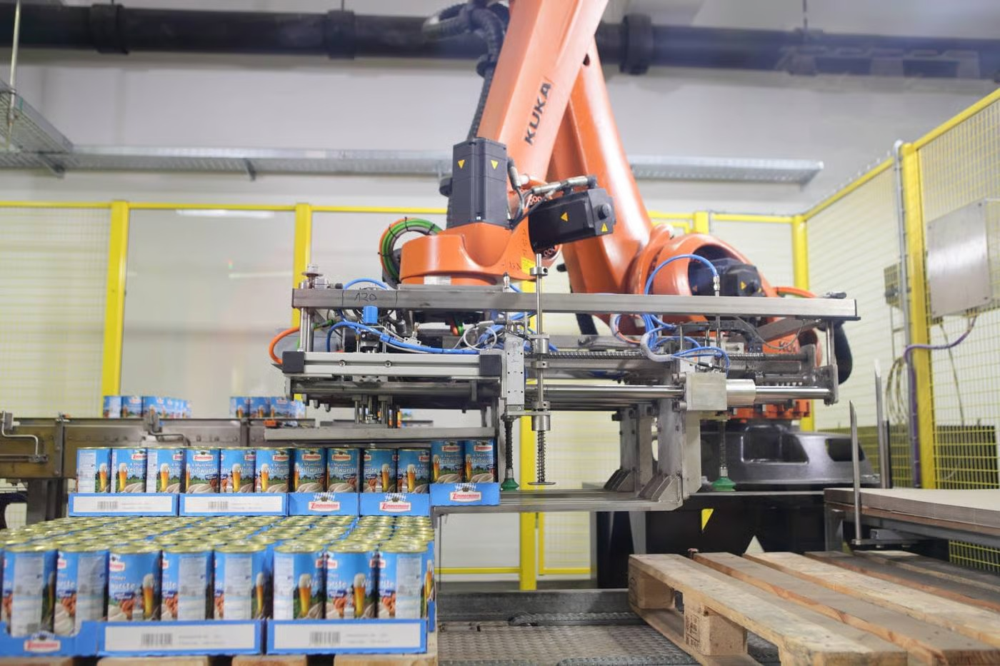
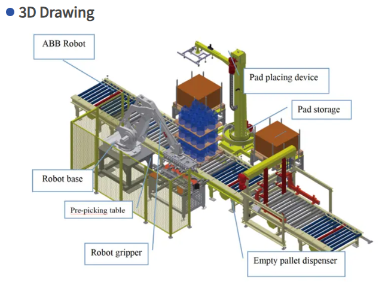

Propuesta Técnica de Automatización
Con base en los diagnósticos operativos y las simulaciones preliminares, Nexum Automation ha diseñado un plan de modernización tecnológica. El objetivo es transicionar la planta hacia un modelo de Industria 4.0, eliminando restricciones de capacidad, mejorando la ergonomía y garantizando la trazabilidad bajo el estándar ISA-95.
🔋 Propuesta: Monster Energy (Alta Velocidad)
El principal reto de esta línea son los micro-paros por desincronización y los tiempos de Set-up. La propuesta se enfoca en control de movimiento avanzado (Motion Control) y visión artificial.
Soluciones Implementadas:
- Sincronismo Electrónico (Virtual Master): Reemplazo de acoples mecánicos por servomotores sincronizados en la llenadora y engargoladora, comandados por un PLC de seguridad, reduciendo el desgaste y vibraciones.
- Inspección Autónoma (Machine Vision): Integración de cámaras de alta velocidad y sensores de Rayos X post-sellado para rechazo automático de latas con bajo nivel o abolladuras sin detener el flujo.
- Gestión Inteligente de Buffers: Control PID sobre los variadores de frecuencia de las bandas transportadoras, regulando la velocidad de acumulación en función del estado de la máquina aguas abajo.
🥤 Propuesta de Mejora: Quatro (PET 1.5L)
Para la línea de producción de Quatro, Nexum Automation presenta una propuesta orientada a eliminar los cuellos de botella en el fin de línea, priorizando la salud ocupacional y la eficiencia operativa.
Automatización de Paletizado con Robot KUKA
Actualmente, el traslado de pallets de 6 productos desde la máquina hasta la bodega se realiza de forma manual. Cada pallet pesa aproximadamente 9 kg, y al hacer dos viajes por minuto, el operario moviliza cerca de 18 kg/min, llegando al límite recomendado de 20 kg. Esto puede generar problemas de salud, disminuir la eficiencia, impacto en la calidad y rotación de personal con necesidad de capacitación.
Se propone implementar un robot Kuka de paletizado para mejorar la eficiencia y reducir el esfuerzo físico del operario, quien podría asumir funciones de supervisión. En términos de rendimiento, un operario mueve aproximadamente 12 productos por minuto, mientras que el robot puede movilizar hasta 270 productos por minuto, lo que representa una mejora cercana al 2150%. Como desventaja, el personal deberá adaptarse a nuevos roles o capacitación, e incluso podría reducirse la necesidad de operarios.
El costo de un operario oscila entre 500 y 800 USD mensuales, mientras que el robot con su celda completa cuesta alrededor de 150,000 USD, con mantenimiento semestral de 10,000 USD. El retorno de inversión (ROI) varía según la cantidad de operarios: con 1 operario es de 15 años, pero en escenarios reales con varios operarios puede reducirse hasta aproximadamente 2–3 años (óptimo entre 5 y 6 operarios). Además, la línea puede operar hasta 3 turnos diarios y producir distintos productos, por lo que los beneficios de la automatización se amplifican más allá de un solo operario.
(Haz clic en la imagen para ampliar)

Figura 1. Representación de la celda de paletizado para la línea Quatro.
Video de Referencia (Robot KUKA)
Demostración operativa del robot propuesto.
💧 Propuestas de Mejora: Agua Brisa (Garrafón 20L)
Para la línea HOD (garrafones retornables), Nexum Automation ha desarrollado dos propuestas de mejora independientes. Cada una ataca un desafío específico de la planta actual y puede ser evaluada o implementada de manera autónoma.
Propuesta A: Reorganización en estructura Tipo U
La planta actual de la línea de garrafones presenta una disposición de equipos que según nuestro criterio no responde a criterios óptimos de flujo productivo, ya que existen estaciones de proceso ubicadas a distancias mayores a las necesarias, generando recorridos innecesarios del producto y aumentando los tiempos de transporte interno. Esta configuración provoca acumulación de inventario en proceso, mayores tiempos de ciclo y menor eficiencia operativa.
Como alternativa, se propone una reorganización de la línea bajo una estructura tipo U, la cual permite integrar los procesos de forma más compacta y secuencial, facilitando un flujo continuo y reduciendo significativamente las distancias entre estaciones críticas como lavado, llenado, tapado y etiquetado. Este tipo de distribución, no sólo disminuye los tiempos de desplazamiento, sino que también mejora la supervisión del proceso, optimiza el uso del espacio y permite una mayor flexibilidad operativa. En consecuencia, la implementación de un layout en U contribuiría a la reducción de tiempos improductivos, el incremento de la productividad y una mejor sincronización de la línea de producción.
(Haz clic en la imagen para ampliar)

Figura 1. Reorganización espacial de la línea HOD mediante Layout en forma de U.
Propuesta B: Celda Robotizada para Paletización
Actualmente, el proceso de paletización de garrafones se realiza de forma manual, lo que representa una limitación significativa en términos de productividad, ergonomía y estabilidad del proceso. Esta operación requiere múltiples operarios por turno, quienes deben manipular cargas de aproximadamente 18–20 kg de manera repetitiva, aumentando el riesgo de fatiga y lesiones musculoesqueléticas, tal como lo advierten entidades como la Occupational Safety and Health Administration y la National Institute for Occupational Safety and Health. Además, la variabilidad en los tiempos de manipulación (entre 6 y 10 segundos por unidad) genera inconsistencias en el ritmo de producción, afectando directamente indicadores clave como el tiempo de ciclo y la eficiencia global del equipo (OEE).
Como solución, se propone la implementación de una celda robotizada de paletización, compuesta por un robot industrial especializado —como el ABB IRB 660 o el FANUC M-410iC/185— capaz de realizar operaciones de pick and place de manera continua, precisa y sin fatiga. Esta automatización permitiría reducir el tiempo de paletizado de aproximadamente 2–3 minutos por pallet a menos de 40 segundos, incrementar la capacidad productiva, disminuir la dependencia de mano de obra directa (de 5–6 operarios a 1 operario de supervisión) y mejorar las condiciones de seguridad en planta. En conjunto, la celda robotizada no solo elimina un cuello de botella crítico, sino que también contribuye a la estandarización del proceso, la reducción de costos operativos y el cumplimiento sostenido de la demanda de producción.
(Haz clic en la imagen para ampliar)

Figura 2. Diseño conceptual de la celda de paletizado robótico.
Video de Referencia (Celda Robotizada)
Demostración operativa del robot propuesto.